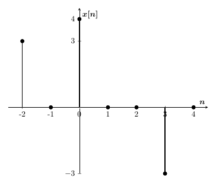
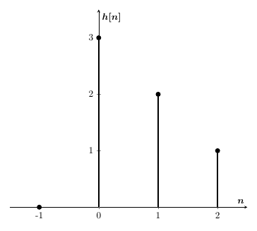

Processamento
Digital de Sinais
Fabrício Gomes
fgs.fabricio@gmail.com
Aula 4
Apresentação disponível no GitHub: https://github.com/fgsfabricio/PDS_Unisul
2018.1

|
Representação de sinais por Outros Sinais
Exemplo 1: representar graficamente $x[n] = 2u[n] - 2\delta[n] - \delta[n-1]$.
Soma de Convolução
Exemplo 2: Resolver $y[n] = x[n]*h[n]$.
 $*$ Soma de Convolução
Exemplo 3: Resolver no Matlab/Octave.
Propriedadades da Soma de Convolução
- Comutativa: $x[n]*h[n] = h[n]*x[n]$
- Distributiva: $x[n]*(h_1[n]+h_2[n]) = x[n]*h_1[n] + x[n]*h_2[n]$
- Associativa: $y[n] = (x[n] * h_1[n]) * h_2[n] = x[n] * (h_1[n] * h_2[n])$
- Deslocamento: Se $x[n-n_0]*h[n-n_1] = y[n-n_0-n_1]$
- Largura: Se a largura de $x[n]$ é $L_1$ é $h[n]$ é $L_2$, então a largura de $x[n]*h[n] = L_1 + L_2 - 1$
Soma de Convolução
Exemplo 3: Resolver
$y_1[n] = x_1[n]*h[n]$
$y_2[n] = x_2[n]*h[n]$
- Onde
- $x_1[n]=\delta[n]$
- $x_2[n]=\delta[n]+\delta[n-1]+\delta[n-2]$
- $h[n]=\{3,2,1\}$ para $n\leq 0$
Revisão - Tipo de Sistemas
Sistemas Lineares
- Aditividade: $x_1[n] \rightarrow y_1[n] $ e $ x_2[n] \rightarrow y_2[n] \Rightarrow x_1[n]+x_2[n] \rightarrow y_1[n]+y_2[n]$
- Homogeneidade: $x_1[n] \rightarrow y_1[n] \Rightarrow ax_1[n] \rightarrow ay_1[n]$
Exemplo 1: Verificar se o sistema abaixo é linear.
$$y[n] = \frac{x[n]}{n}$$Revisão - Tipo de Sistemas
Sistemas Invariantes no Tempo
- Sistema para o qual ou atraso no tempo da sequência de entrada causa um deslocamento correspondente na sequência de saída, ou seja, o sistema não deve interferir temporalmente na saída em relação ao sinal de entrada.
- Se $x_2[n] = x_1[n - n_0]$, a saída produzirá uma sequência com valores $y_2[n] = y_1[n- n_0]$
Exemplo 2: Verificar se o sistema abaixo é invariante no tempo.
$$y[n] = x^2[n]$$Revisão - Tipo de Sistemas
Sistemas Causais
- Sistema para o qual a saída não depende de sequências de entradas futuras, ou seja, depende de valores da sequência para $n \leq n_0$.
- Isso implica que, se $x_1[n] = x_2[n]$ para $n \leq n_0 $, então $y_1[n] = y_2[n]$ para $n \leq n_0$.
Exemplo 3: Verificar se os sistemas abaixo são causais.
$$y[n] = x[-n]$$ $$y[n] = 5x[n-10]$$Revisão - Tipo de Sistemas
Sitemas Estáveis
- Um sistema é estável no sentido entrada limitada saída limitada (BIBO, do inglês bounded-input, bounded-output) se, e somente se, toda sequência limitada de entrada produzir uma sequência limitada de saída.
- Ou seja, se o $max(|x[n]|) < \infty \Rightarrow$ $max(|y[n]|) < \infty$
Exemplo 4: Verificar se o sistema abaixo é estável.
$$y[n] = nx[n]$$Revisão - Sinais Singulares
Determinar o seguinte sinal: